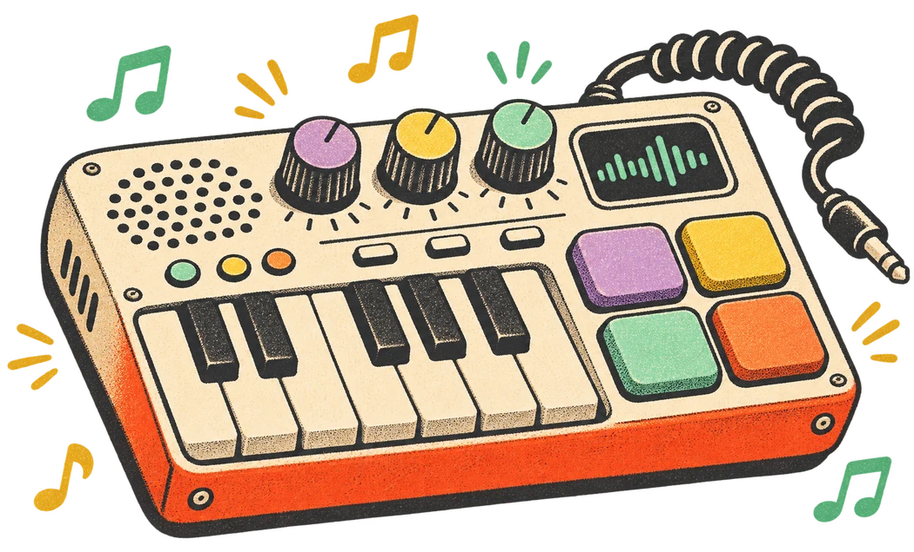

Přejít na obsah
MusicLab
Experimenty
Výzvy
Zvuk zapnutý
Rodinná hudební laboratoř
Hraj si
se zvukem.
Poskládej rytmus, nakresli melodii a objev, jak vzniká zvuk. Stačí ti myš a tvoje uši.
Začít s rytmem
Pustit ukázku

Vyber si experiment
.
Pro přehrávání a skládání hudby zapni v prohlížeči JavaScript.